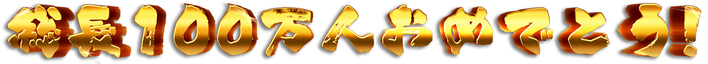

GAME
パソコンの大きい画面で遊んでね
操作方法：キーボード：WASD or 方向、マウス・・・・・・
FANART
EPISODE
組長・代行ちゃんへ
VRゲーム配信やコスプレ、ガンプラ配信、南部式英語教室など様々な配信を観てきましたが、組長が楽しそうに遊んでいるのがこっちにも伝染しちゃってついつい口元が綻んでしまってたのを思い出しますw
タツシコ
折れず曲がらぬ貴女の生き方に恋をした。
Green Frog
ニコニコ動画で組長を知り、面白くて何度も何度も動画を見返していました。プレミアムに入り続ける理由になっていたくらいにw 動画を見る時間があまり取れなくなり、YouTubeはほぼ見ていなかったところ偶然南部式英語教室を見かけて元気にしていることを知りました。 再び繋がった縁を大事にして、荒波にもまれるあなたに寄り添いたいと思いました。
dondon
『沢山の楽しい事を、沢山の人に伝えてくれる』 そんなあなたを見ていたい、応援したいと思いました
晴風
一つ光栄な事にmildomのモデレーターとして経験があります。 当時何も出来ない自分に組長の力になりたいの願いが叶って、出来る限り頑張っていた。 時間が経ってどんどん平和になり、組長一つの悩みを解決して少しでも役に立ってたのが嬉しかった。
孽¿_天の邪鬼_?
組長を推していてなによりも嬉しかったし感謝したいことは、自分のファンアートを見て反応をくれたこと。 そもそも、イラストを描くような文化のなかった自分がイラストを描くに至ったのは、組長の「常に新しいことに挑戦しようとするチャレンジャーな姿」に感銘を受けたから。 だからこそ、その影響の一環で描いた絵を組長に見てもらえたのはすごくありがたいし、新しいことに挑戦することを認めてくれたようで素直に嬉しいなと思いました。 他にも色々影響を受けたことはありますが、なによりも組長には生きる活力をたくさんもらってます！
考える梨
2021年7月頃から組長の存在を知った新規構成員です。配信を初めて見たときに、人一倍楽しんでゲームをしている組長にみるみるうちに惹かれていました。配信を追いかけているうちに自分にとって欠かせない存在になっていました。
Yozoran
とある龍の絡みで組長を知りました。
組長がいて下さるから龍が旅立つ時にも、
そんなに凹まないで済むだろうと思って、
おりましたけどダメージは殊の外大きく、
血便が何日か出ました。主治医の先生に、
その件を報告したところ大腸内視鏡検査、
を一度受けてみることを提案されてその、
検査で癌が見つかったので、現在治療中、
ですけどもし治ったら組長に命を戴いた、
ということになります。有難いことです。
６６Ｑ
何もかも上手くいかず落ち込んでいた時にエールを貰いに配信を見にいっていた ポジティブな配信でいつも笑いをありがとう!! 2.5次元部位Tuberは天才か!?
パオ
あれは1月の中旬だったかな、ミルダムの放送で火山洞窟探しにいってる時にそのときARK初心者だったけど付いていっていろいろ助けてもらって一緒に攻略できたのはいい思い出です。ゲーム内の組にも誘ってもらったし時折心配して戻ってきてくれたり、ペット貸してくれたりとARKの良さを教えてもらえました。
金竜幼女
私の組長との出会いは2020年の末ごろでした。流暢な日本語とユーモラスな言葉遣いが聞いていて楽しく、継続して配信を見るようになりました。構成員のみなさんのコメントも面白く、配信の雰囲気が自分にあっていたのも視聴するようになった一因かもしれません。
おぐってぃーぬ
私が初めて組長に出会ったのは高校時代のニコニコ動画でした。 突如ランキングに現れたあなたはあの時まだ日本語がたどたどしく見ていてとても可愛らしい方だなと覚えています。 例え英語で話していても素早いキレのあるトーク、見ている人を楽しませるゲームプレイ、なにより一生懸命やっているその姿に今思えばその時から私は一目惚れしていたと思います。 私の青春とともにあなたの実況動画がいつも傍にありました。
あさひ
最初に出会ったのは多分2年ぐらい前。ニコニコでビートセイバーの動画を見つけ、海外の方の動画投稿者は珍しかったので、つい他の動画を見ました。 特に印象に残ったのはFuckingの正しい使い方を教えていた南部式英語教室でした。 ひどい内容(誉め言葉)ですけど、非常に正しい使い方を丁寧に解かりやすく説明してて、海外民の自分でも凄く笑える動画です。今でも時々振り返って見ています。
Tomura
通りすがりのガンタンク等のネタスパチャに、毎回キレキレのツッコミを入れていただいて感謝です！ ネタスパをする勇気がわきました。
白のⅥ号
（自分も含めて）活動再開に伴って構成員の数が増えたときになじみやすい雰囲気を作ってくれてとても嬉しかった。
9629kuroniku
組長には毎日仕事で苦しいばかりの日々を救っていただきました。 あまりにも破天荒な行動と太陽のようにまぶしい笑顔が、私の毎日を照らしてくれたんです。 それに同じく組長を慕うかけがえのない仲間とも出会うこともできました。
library
自分が組長の配信で最初に見たのはバイオリベレーションズでした。 この頃は配信頻度は水曜日曜で少なかったですが、鋭いワードセンスに一瞬で心をつかまれてしまいましたね。 その合間の文字通りのクソゲーでクソ笑わしてもらったりもしました。（今アーカイブ見ると注意が表示されてるの草） あ、ティファコスはまたいつかしてほしいなー。 そして１桁万人だったのがあれよあれよという間に２桁万人になり、代行ちゃんも2代目になり、 メンバーシップも始まり、ガンプラ・ナンシーちゃんを筆頭とするモノづくり配信、歌枠、ミームレビューなんかも始めちゃって、 超大型デビュー前新人部位チューバー（？）になってしまった。駆け抜けすぎィ！！ でも、配信では何も変わることなく楽しませてくれる。そんな組長が大好きなんだよな。
白黒ココア
総長へ
何と言ってもkson総長の衝撃のデビュー‼︎
タツシコ
これから紡がれる物語を思うと心が躍る。
Green Frog
一生懸命考えて、また楽しいことをしてくれる。そんなあなたが大好きです。デビュー配信はツッコミどころ見どころが多すぎますw
dondon
いくつもの障害に、時に悩み、傷つき それでも決して止まらず、立ち向かって、ブチ壊して 新しい世界を広げて行くあなたの背中は本当に美しい
晴風
今はVにもなって新しい道を歩んで、最古参ではないが、その時を組長と構成員の皆さんと乗り越えて、ずっと組長を応援続けることで絆が深めるのように感じた。
孽¿_天の邪鬼_?
ひどすぎるチンゲーやって当然のようにbanされたり(mildom)、 かと思えば素晴らしい歌声で構成員(親衛隊)を魅了したり(歌枠)、 みんなが知らない知識を共有して見識を広めてくれたり(meme、雑談、GMMF)、 なにより、新しいことにどんどん挑戦していて(南部式英語教室、プラモ、2.5D、...)、 ほんとにギャップのある人で、それがなによりの魅力だと思います。
考える梨
2021年10月20日現在に至るまでたくさんのスマイルを届けてくれる組長にとても感謝しています。なかでもmemeは毎週の楽しみのひとつです。そしてついに総長としてデビュー！見ている側としてもとても嬉しくて温かい気持ちになりました。改めまして、デビューおめでとうございます！
Yozoran
懐かしいガワに尖り切った高性能と、
コラボ相手の機材の機能を踏み潰す重さ、
で優勝です。乾物ひもの先生の絵柄的に、
代行ちゃんのラインで話が進んでいたと、
思われる流れにＹａｍａｎ神が降臨され、
一気に総長までグレ上がったげな妄想を、
抱いております。ＶはＲＰを土台に高く、
跳ぶという構図を見せつけられて激しく、
感動しています。組長はご自分の強みを、
本当に良くご存知だと感服しております。
６６Ｑ
代行ちゃんから総長に変わり代行ちゃんには感謝の気持ちでいっぱいです。組長を支えてくれてありがとう!!首ゴキが見れないのは寂しい…
パオ
代行が総長となり、いろいろなVtuberさんとの交流が増えてきて、Vtuber好きの自分としては今後のコラボが非常に楽しみです！組長も、他の配信者さんとコラボしたいというお話もあったので、そちらも期待してます！
おぐってぃーぬ
100万人まで後少し！総長が駆け抜ける生き様を見届けさせていただきます！
白のⅥ号
7月はメンシのメッセージはあったものの配信がなくてとっても寂しかったです。8月からほとんど毎日配信してくれてたくさんお話しできるのがとっても楽しいです。歌枠も好きで、組長の枠で覚えた歌がたくさんあります！その中で好きなのはほほえみは光る風のなかとロッカバイです。前の代行ちゃんも好きですが、総長はめちゃくちゃ可愛いし、制限してたであろう活動が始まった気がしてもっと好きになりました。
えすえすれあ
総長になられてからこれまであえて控えられていた企画やコラボなどをするようになって、これまで以上に楽しんでおられる姿が見られてこちらもとても幸せです。
9629kuroniku
代行ちゃんがグレて総長になってしまった。どうなることかと思いましたが、総長は想像をはるかに超えた重くてデカい女でした。このデカい器でこれまでセーブしていたゲームもできるようになるんだろうなと期待しているところに、さらに追い打ちをかけるようにGMMF News！が始まって、この予想を超えた怒涛の展開、そこに痺れる憧れるゥ！です。ホントに。フレンズの輪も大明神の輪もなんだかすごいことになってきちゃいました。VTuber界を盛り上げるつもりなんだなと。デカすぎんだろ…。
白黒ココア
未来の総長へ
個人Vtuberの強みを活かした色んな試みを思う存分やって貰いたい！ これからも楽しそうなkson組長、kson総長の笑い声をいつまでも応援しています！
タツシコ
貴女の活躍が末永く続きます様に。
Green Frog
あなたがあなたらしく生きていけますように、楽しいことのお返しをしてもしきれないくらいずっとずっと応援させてください。 くれぐれも無理はしないで、親衛隊が杞憂民になっちゃいますからね？w
dondon
そんな背中を親衛隊として、ずっと追いかけていたい！
晴風
何年経っても配信への熱情が冷めることなく、いつも初心を保つ!何年でも続けたい!!応援したい!!!未来を見届けたい!!!!
孽¿_天の邪鬼_?
ただみんなを笑わせたい。
そんな総長の単純ながらに困難を極めるであろう志を、
世界一を目指すその背中を、今後も追わせていただきたいと思います。
姐さん、推して参ります！
考える梨
最後に、配信を通してたくさんの幸せを届けてくれて本当にありがとうございます。これからもずっと応援しています。めざせ！全世界構成員化！！
Yozoran
始動早々に危機を孕んだ気がします。
言うほど危ないとは思っていませんけど、
ひもの神によって齎された村長の祟りは、
この先どうなるのかほんのりアレしつつ、
常々語られる組長の裏のデカいシノギの、
ご発展を心の底からお祈り申し上げたい、
と全力で思っております。組長はきっと、
大勢の人々を幸せにして下さるでしょう。
６６Ｑ
100万人おめでとうございます!! 100万人の親衛隊を率いた総長なら世界とれる!!これからのVTuber界を盛り上げていく希望の星!! これからもずっとついていきます!!応援してんで!! l love 組長!! I love 総長!! 我 血 恋!!(？)
パオ
私がみんなをてっぺんへつれていく！」という発言が雑談配信の中でありました。てっぺんの景色を見せてもらえるのを楽しみにしてます！そして、そのお手伝いができるように応援し続けます！！
おぐってぃーぬ
総長100万人達成おめでとうございます！総長が描く未来に全力でお供致します！！
白のⅥ号
この先どうなるのかわからないけどksonさんと楽しい時間をたくさんすごしたいです。ずっとずーっと最推しで愛します！！
えすえすれあ
組長そして総長がお友達と気兼ねなく笑い合ったりコラボしたりできる平和な日々がずっと続きますように
9629kuroniku
きっとこれからはフレンズの輪を広げ（おまけにマキシマムの輪も広がる）、 そのフレンズでコラボしちゃったりするんでしょうね！ 主にARKとかARKとかARKとかを！！ハードコアコラボ、待ってます。 そして界隈全体を盛り上げていってほしいですね。 でも、どこで見つけるのかよくわからないクソゲーやホラゲを楽しそうにやってるのも大好きなので、 そこは変わらないでいてほしいかな。ずっと応援してんで。
白黒ココア
STAFF
企画/PROJECT
マネージャー/Project manager
k-project
動画/VIDEO
動画/Video
mineo_C
音楽/Music
Ryo'sML
歌/Singer
dondon
歌/Singer
さたた
歌/Singer
DY Haku
歌/Singer
jaygray91
歌/Singer
透なつ
歌/Singer
日向のじろきょー
歌/Singer
SnowBunny
歌/Singer
Tanya Begbie
歌/Singer
Setsuko
歌/Singer
reo
歌/Singer
rams
歌/Singer
あさひ
歌/Singer
Kazuma Taichi
ゲーム/GAME
マネージャー/Manager
エリサ
プログラマー/Programmer
Tom "Skeletom" Farro
サウンド/Audio Engineer
toki
記念サイト/WEBSITE
デザイン/Design
蔬菜果
フロントエンド/Front-end engineer
Tatsuran
制作協力/contributor
Tam
制作協力/contributor
TsarBomba92
スペシャルサンクス/
Special Thanks to
翻訳/Translation
Kamishiro Taishi
翻訳/Translation
Lats
制作協力/contributor
晴風
制作協力/contributor
おぐってぃーぬ